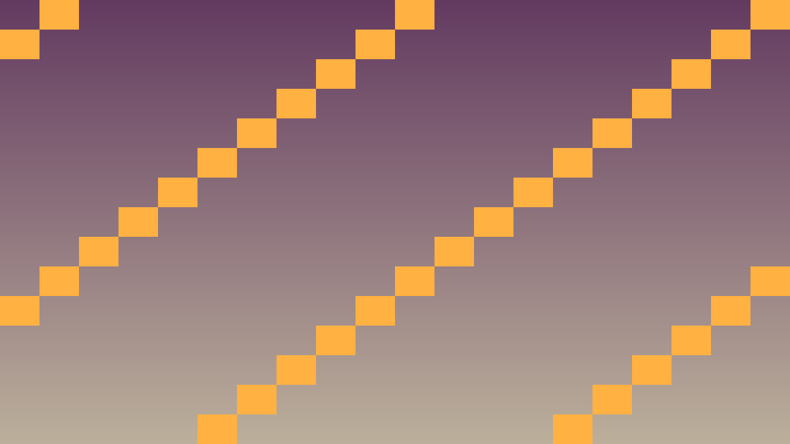

Stundas uzdevums: Implementēt platformas spēles tipisko jump+gravitāciju mehāniku.
Pirms sāc: izmanto iepriekš apgūto un šīs lapas teorijas/koda piemērus. Ja vajadzīga jauna komanda vai rīks, vispirms atrodi tās paraugu teorijas sadaļā.
Klasiska 2D platformas mehānika ietver:
class Player : public CharacterBody2D {
private:
const float SPEED = 300.0f;
const float JUMP_FORCE = -550.0f; // negatīvs = uz augšu
const float GRAVITY = 1500.0f;
Vector2 velocity_internal;
public:
void _physics_process(double delta) override {
// Gravitācija
if (!is_on_floor()) {
velocity_internal.y += GRAVITY * delta;
}
// Jump
Input *input = Input::get_singleton();
if (input->is_action_just_pressed("jump") && is_on_floor()) {
velocity_internal.y = JUMP_FORCE;
}
// Horizontālā kustība
float dir = input->get_axis("move_left", "move_right");
velocity_internal.x = dir * SPEED;
set_velocity(velocity_internal);
move_and_slide();
velocity_internal = get_velocity();
}
};Atceries: ar redzamu efektu editorā nepietiek. Paskaidro, kura C++ klase glabā stāvokli, kura metode to maina un kā Godot node struktūra izmanto šo kodu.
Pārbaudi: spēlētājs, objekti un sadursmes darbojas ar C++ klasēm, kas lieto _physics_process, Input, CharacterBody2D, Area2D vai move_and_slide.
#include <godot_cpp/variant/string.hpp>
using namespace godot;
struct PhysicsCheckpoint {
String lesson = "2.5 Gravitācija un platformas mehānika";
bool uses_cpp = true;
bool uses_physics_process = true;
bool uses_delta_time = true;
bool checks_collisions = true;
};Šis ir īss iesildīšanās uzdevums. Nokopē sagatavi, ielīmē to pareizajā koda vietā un palaid. Šeit pietiek droši izmēģināt tēmu 2.5 Gravitācija un platformas mehānika; detalizētu izpratni veidosi nākamajos uzdevumos.
Kopējamais piemērs vai sagatave: izmanto šo bloku kā starta punktu, nevis kā gala risinājumu.
#include <godot_cpp/variant/string.hpp>
using namespace godot;
struct PhysicsCheckpoint {
String lesson = "2.5 Gravitācija un platformas mehānika";
bool uses_cpp = true;
bool uses_physics_process = true;
bool uses_delta_time = true;
bool checks_collisions = true;
};.cpp vai .hpp failā pie šīs stundas klases.Pievieno šīs stundas paņēmienu kā nelielu, strādājošu spēles mehānikas daļu.
PlayerState, velocity, score vai update_ui()._ready(), _process(), _physics_process(), signāla apstrādātāja vai projekta palīgklases.Pārbaudi, vai C++ algoritms darbojas paredzami spēles vidē.
Ja pamatdarbs ir pabeigts, paplašini spēli ar vienu nelielu C++ uzlabojumu.
is_on_floor() pārbaude.
void Player::_physics_process(double delta) {
Input *input = Input::get_singleton();
// Gravitācija
if (!is_on_floor()) {
velocity_internal.y += GRAVITY * delta;
}
// Jump ar variable height
if (input->is_action_just_pressed("jump") && is_on_floor()) {
velocity_internal.y = JUMP_FORCE;
}
if (input->is_action_just_released("jump") && velocity_internal.y < 0) {
velocity_internal.y *= 0.5f;
}
// Horizontāla
float dir = input->get_axis("move_left", "move_right");
velocity_internal.x = dir * SPEED;
set_velocity(velocity_internal);
move_and_slide();
velocity_internal = get_velocity();
}